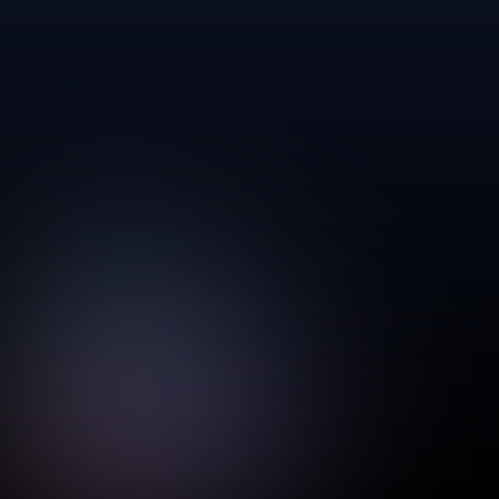
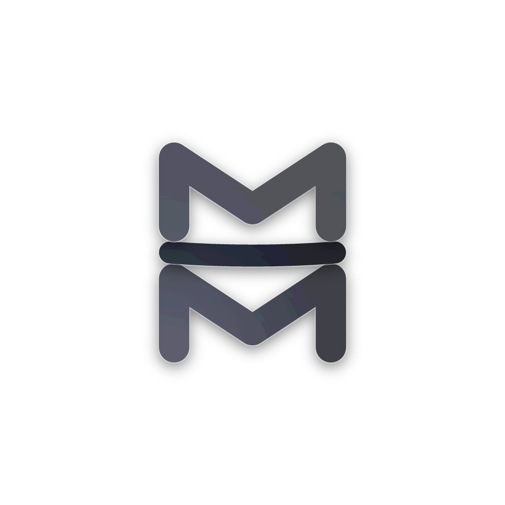

Glass brand proof (shared-05)
Slab layers (bottom M, gutter bar, top M) on grey
200px
200px200px
iOS icon under a 22.37 % mask at 1024 (shown 320), 180 and 60; dark and tinted
Android foreground over the field with the 66 dp circle; monochrome themed

216px
216pxNeutral mark at 96 px and 44 px
81.6px37.4px
Column at 32, 24 and 16 px tall
27.2px20.4px13.6px
Stacked wordmark at 1x and at its 28 px minimum height

480px64.66666666666667px
320pxSingle-line wordmark at 12 px cap height
103.33333333333334px
Favicons at 16 and 32 on white and #202124: Glass then Cinematic
16px
16px
32px
32px
16px
16px
32px
32px
Droplet texture at 60 % over white and black 160 px tiles
Cinematic and Glass iOS icons at 60 px
31 exported files in manifest.